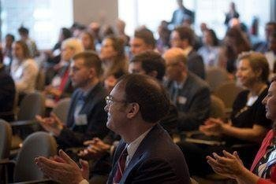

SABEW
SABEW Spotlight
Conference attendees congratulate an award recipient during the 2019 national conference. This year's conference will be in August.
Upcoming events
2020 SABEW Midwest Regional Conference
June 3-6, 2020
2020 SABEW National Conference
August 10-15, 2020
Marriott Inn Suites
Downtown Plaza San Diego, CA
Early Bird Registration Deadline: February 7, 2020
Register here
Waldorf Astoria
Lower East Side Manhattan, New York
Early Bird Registration Deadline: May 25, 2020
Application Deadline: October 2, 2019
Register here
Latest News
Board member dies of heart attack after award
Board member Annie Li receives lifetime achievement medal from Missouri School of Journalism.
Fourteen-year member Javkhlan Bold-Erdene elected president of Mongolia.
SABEW executive director Allison Fu appointed chancellor of Mizzou.
John Smith was the digital editor of the Kansas City Star and will be missed. He is survived by his wife and two children. Bloomberg
The award recognizes 30-year career in the industry working as both a reporter and editor for several publications. Missouri
She is set to lead a country that has been in a recession for the better part of three years. Wall Street Journal
She said her first priority is to reestablish to turn the university's founding into a national holiday. Missouri